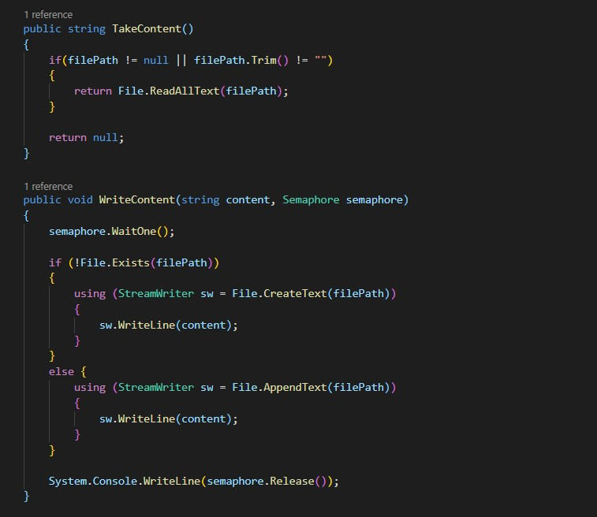

Тема: ПОТОКИ.
Мета: придбати практичні навички роботи з потоками.
- Постановка задачі:
- В окремому проекті виконати завдання пункту №3
Місце розташування проекту: посилання.
Середовище розробки: в ході реалізації проекту в основому використовуються дві програми - Visual Studio 2019 та Visual Studio Code.
Завдання 4.1
Class
Завдання 4.2
Class
Code
Завдання 4.3
Class
Code
Завдання 4.4
Class
Code
Console
Висновок
В ході виконання даної лабораторної роботи я придбав практичні навички роботи з потоками.